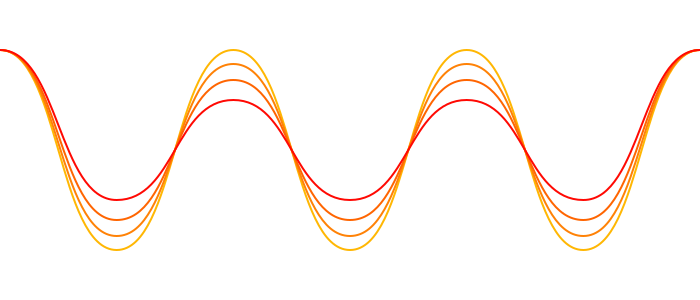

Untones are occasional, delightful ringtones for your mobile devices (or whatever application you so desire), served in pairs, as often as the author feels like doing it.
Designed and maintained by Daniel Eden. Untones are created using Apple’s Logic Pro, operated by human hands, influenced by a human brain. Donations welcome.